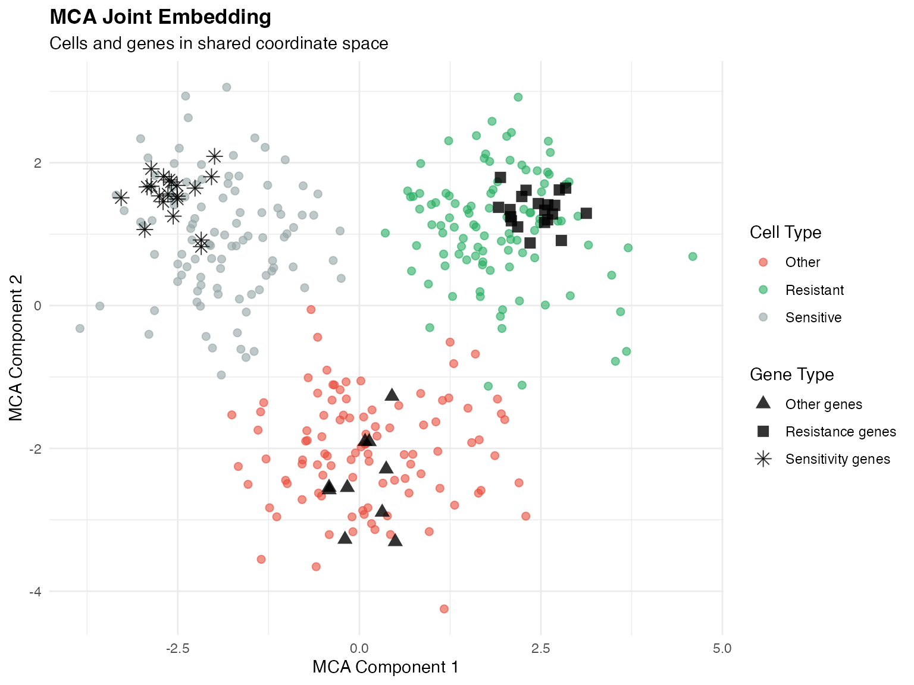

Overview
scPharm employs a multi-step computational pipeline to identify pharmacological subpopulations at single-cell resolution. This vignette describes the underlying algorithms and statistical methods.
Step 1: Copy Number Variation Detection
For tissue samples containing mixed tumor and normal cells, scPharm employs an integrated CopyKAT-based algorithm to distinguish malignant cells.
Algorithm Overview
The CNV detection follows these steps:
- Gene Annotation: Map genes to chromosomal positions using hg20 annotations
- Expression Binning: Aggregate expression into genomic bins (220 bins per chromosome)
- Baseline Normalization: Use normal cells or synthetic baseline as reference
- Smoothing: Apply Kalman filtering to reduce noise
- Clustering: Hierarchical clustering to identify aneuploid populations
Step 2: Multiple Correspondence Analysis (MCA)
MCA is used for dimensionality reduction, preserving the correspondence between genes and cells.
Why MCA?
Unlike PCA which assumes continuous data, MCA is designed for categorical/count data and provides:
- Joint embedding of cells and genes
- Natural handling of sparse scRNA-seq data
- Interpretable gene-cell associations
Mathematical Formulation
Given a normalized expression matrix with cells and genes:
- Construct indicator matrix by discretizing expression levels
- Compute correspondence matrix:
- Perform SVD:
-
Extract coordinates:
- Cell coordinates:
- Gene coordinates:

MCA embedding showing cell-gene correspondence
C++ Implementation
scPharm implements MCA using RcppArmadillo for computational efficiency:
// Simplified MCA computation (actual implementation in src/mca.cpp)
arma::mat SparseMCAStep1(arma::sp_mat& X) {
// Column sums and total
arma::vec col_sum = arma::vec(arma::sum(X, 0).t());
double total = arma::accu(X);
// Compute standardized residuals
arma::mat Z = compute_residuals(X, col_sum, total);
return Z;
}Step 3: Cell Identity Signatures
For each cell, we extract a gene signature based on its position in MCA space.
Step 4: Gene Set Enrichment Analysis
GSEA quantifies the enrichment of drug sensitivity genes within each cell’s signature.
Step 5: Cell Classification
Step 6: Drug Scoring Metrics
Computational Complexity
| Step | Complexity | Notes |
|---|---|---|
| CNV Detection | O(n × g) | n = cells, g = genes |
| MCA | O(min(n,g)³) | SVD computation |
| Cell Signatures | O(n × k) | k = MCA components |
| GSEA | O(n × d × g) | d = drugs |
| Classification | O(n × d) | GMM fitting |
References
Gao R, et al. (2021). Delineating copy number and clonal substructure in human tumors from single-cell transcriptomes. Nature Biotechnology.
Subramanian A, et al. (2005). Gene set enrichment analysis: A knowledge-based approach. PNAS.
Yang W, et al. (2013). Genomics of Drug Sensitivity in Cancer (GDSC). Nucleic Acids Research.
Cortal A, et al. (2021). Gene signature extraction and cell identity recognition at the single-cell level with CelliD. Nature Biotechnology.
Session Info
sessionInfo()
#> R version 4.4.0 (2024-04-24)
#> Platform: aarch64-apple-darwin20
#> Running under: macOS 15.6.1
#>
#> Matrix products: default
#> BLAS: /Library/Frameworks/R.framework/Versions/4.4-arm64/Resources/lib/libRblas.0.dylib
#> LAPACK: /Library/Frameworks/R.framework/Versions/4.4-arm64/Resources/lib/libRlapack.dylib; LAPACK version 3.12.0
#>
#> locale:
#> [1] C
#>
#> time zone: Asia/Shanghai
#> tzcode source: internal
#>
#> attached base packages:
#> [1] stats graphics grDevices utils datasets methods base
#>
#> other attached packages:
#> [1] dplyr_1.1.4 ggplot2_4.0.1
#>
#> loaded via a namespace (and not attached):
#> [1] gtable_0.3.6 jsonlite_2.0.0 compiler_4.4.0 tidyselect_1.2.1
#> [5] dichromat_2.0-0.1 jquerylib_0.1.4 systemfonts_1.3.1 scales_1.4.0
#> [9] textshaping_1.0.4 yaml_2.3.12 fastmap_1.2.0 R6_2.6.1
#> [13] labeling_0.4.3 generics_0.1.4 knitr_1.51 htmlwidgets_1.6.4
#> [17] tibble_3.3.1 desc_1.4.3 bslib_0.9.0 pillar_1.11.1
#> [21] RColorBrewer_1.1-3 rlang_1.1.7 cachem_1.1.0 xfun_0.56
#> [25] fs_1.6.6 sass_0.4.10 S7_0.2.1 otel_0.2.0
#> [29] cli_3.6.5 pkgdown_2.1.3 withr_3.0.2 magrittr_2.0.4
#> [33] digest_0.6.39 grid_4.4.0 lifecycle_1.0.5 vctrs_0.7.1
#> [37] evaluate_1.0.5 glue_1.8.0 farver_2.1.2 ragg_1.5.0
#> [41] rmarkdown_2.30 tools_4.4.0 pkgconfig_2.0.3 htmltools_0.5.9